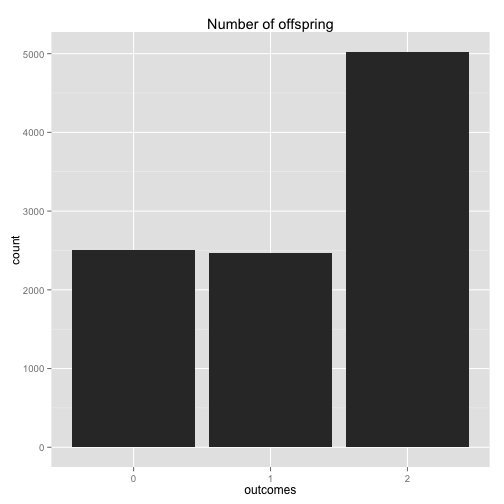

An Rmd file for this article can be found at https://github.com/gmodena/notebooks/blob/master/bobo.Rmd.
Bobo the amoeba has a 25%, 25%, and 50% chance of producing 0, 1, or 2 offspring, respectively. Each of Bobo’s descendants also have the same probabilities. What is the probability that Bobo’s lineage dies out?
Let \(X\) be a random variable that describes the event "the population eventually dies out". We are asked to find \(P(X)\). For \(i\) in \({0,1,2}\) let \(A_i\) be a r.v. describing the event that Bobo turns into \(i\) amoebas. It follows that
By the law of total probability we can now write \(P(X)\) as
by doing simple algebra we reduce the equation to \(0 = \frac{1}{4} + P(X) (-\frac{3}{4} + \frac{1}{2} P(X))\)
which has roots \(P(X) = \frac{1}{2}\) and \(P(X) = 1\).
Which one should we pick? Intuitively we can expect P(X) to be < 1, but let's validate this by means of simulation.
We can simulate a few iterations of Bobo's reproductive process and count how many times its lineage died out. If we do this for a large enough number of iterations, we should get an asymptotic value good enough to discriminate between the two roots. It's also a good excuse to brush up some R.
library('ggplot2')
We can encode the probabilities \(P(A_i)\) as
p <- c(0.25, 0.25, 0.50)
To generate an offspring wrt the given proabilities p we use a function that simulates a multinomial distribution.
offspring <- function(v) {
r <- runif(n=1)
inP <- -1
for (k in 1:length(p)) {
inP <- k
if ((k == 1) & (r < v[k])) {
inP <- k-1
break
}
else if ( (k>1) & (r < sum(v[1:k])) ) {
inP <- k-1
break
}
}
return(inP)
}
We can refactor this code in a more performant, vectorized, form as:
offspring <- function(v) {
match(1, rmultinom(1, 1, p))-1
}
To convince ourselves that the multinomial simulation works, let's plot the frequency of each offspring over a few thousand iterations.
t <- replicate(10000, offspring(p))
df <- as.data.frame(t)
colnames(df) <- c("outcomes")
ggplot(data=df, aes(x=as.factor(outcomes))) +
geom_histogram() +
xlab("outcomes") +
ggtitle("Number of offspring")

max_iterations <- 1000
max_generations <- 100
Finally let's simulate Bobo offspring over time. How many runs resulted in the offspring dying off within {r} max_generations out of {r} max_iterations?
is_extinct <-function(generations) {
offs <- 1 # We start with only Bobo
next_offs <- 0 # offspring of the next generation
while (offs <= generations) { # loop through generations
if (offs == 0) { # lineage died out
break
}
next_offs <- 0 # offspring of the current generation
for (j in 1:offs) {
next_offs <- next_offs + offspring(p)
}
offs <- next_offs
}
return(as.integer(offs < generations)) # TRUE if the lineage dies out
}
# count the number of times Bobo's lineage died off. Do it for 10 runs of
# max_iterations each
res <- replicate(10,
sum(replicate(max_iterations, is_extinct(max_generations)))
/ max_iterations)
Results suggest that Bobo's lineage will go extinct with \(P(X) = \frac{1}{2}\).
summary(res)
## Min. 1st Qu. Median Mean 3rd Qu. Max.
## 0.4820 0.4980 0.5015 0.5051 0.5130 0.5240
More formally, this problem can be modelled as a branching process; that is, we can look at it as a Markov chain where the state \(A_n\) represents the number of amoebas at generation (or time) \(n\), and transition probabilities can be written in the from \(P(A_{n+1} = i |A_n =k) = P(W_1 + W_2 + ... + W_k = i)\), where \(W_1, ..., W_k\) are independent random variables each representing the offspring distribution. This leads to a recursive representation of the problem, where each \(W_k\) models a branching process. We observe that if \(A_n\) reaches 0, it says there (0 is an absorbing state). It is known (theorem) that when an individual has less than one offspring on average, denoted as \(\mu \leq 1\), its lineage will die out with \(P("extinction") = 1\). When \(\mu \gt 1\) there are two solutions for the recursive sequence \(P(X) = \frac{1}{4} P(X|A_0) + \frac{1}{4} P(X|A_1) + \frac{1}{2} P(X|A_2)\) and the extinction probability is the smallest of the two. Analysis and proofs can be found at this link
In our case the offspring expectation is \(\mu = 1.25\); it follows that Bobo's lineage will go extinct with probability \(P(X) = \frac{1}{2}\).